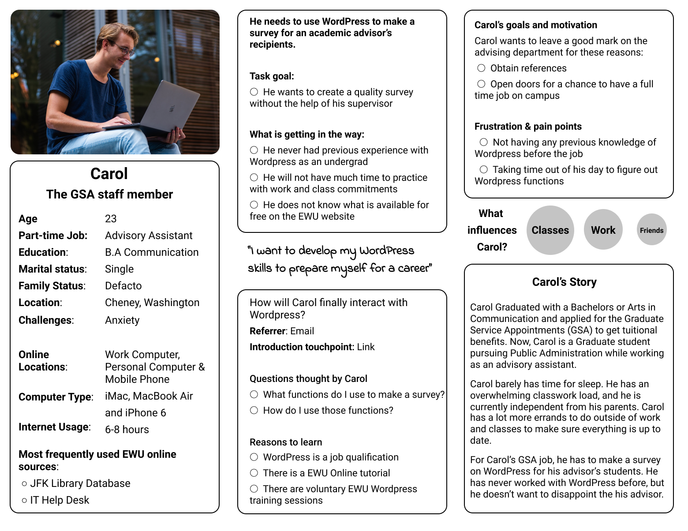

How do I add a page on WordPress? How do I add a post on WordPress?
How to add a page to WordPress? How to add a post to WordPress?
How to change the URL of the WordPress Page? How to add a Subpage to a WordPress page?
We realized the instructions for these questions were incomplete or difficult to follow. The instructions contained wordy sentences or not enough information. Revisions were necessary to help the user understand the information.
How to create an email notification in Workflow?
How to create a confirmation email in Workflow?
How to change the visibility settings of a WordPress Page?
How to create a survey on WordPress?
How to request a plugin?
Final Manual & Alt Text
Each button contains a section of the manual, and included alt-text to each action for easy insertion. Feel free to look through the manual and other sources our team created.
Final Video Instructions & Subtitles
Our group created the video based on the print instructions that we created after researching
and creating user personas. In parallel with the print instructions, we created videos that explain
the same WordPress functions.
To transform the print instructions into video instructions, we created storyboards using Google Docs based on the information in print. We also created scripts for each task to follow audio recording. We then screen-recorded each task carefully using Open Broadcast Studio and uploaded those files to Google Drive for editing. We matched the video and audio and adjusted it based on usability testing results.
Client & Milestones
Metadata
A set of instructions for printable and digital formats.
Danny Messina - Eastern Washington University IT.
April to June 2019.
Wordpress, Photoshop, and Figma
Research & usability testing
Whitney Bolar, Anthony Mendoza & Andrew Lawson
Research
New Undergraduate Students Accustomed Undergraduate Students Graduate Student Employees
I got to interview three graduate student employees. I talked to a program assistant who needed to know the functions of her new website on WordPress. I also spoke with an administrative specialist; she only needed to know a few functions to develop surveys for other students.
They all struggled in the beginning of their job.
All of them agreed that they did not have any recollection of WordPress as an undergrad.
Most of them thought that if they knew about WordPress before they graduated with their bachelors, they could have made exceptional work quicker.
They did say that WordPress is an easy program to use, so the learning process was quick and easy to understand.
More staff members use WordPress because they have access to the EWU webpage.
An average undergrad or graduate student would not have a need to use Wordpress unless their major required it.
I realized they have a diverse amount of WordPress experience influenced by their job description.
The persona represents a graduate student that recently got a Bachelors of Arts in Communication and applied for the Graduate Service Appointments (GSA) to get an assistantship position at an advisory office. I realized that the Wordpress program has an audience of faculty, staff and students at Eastern Washington University. In response to my discovery, I created a persona that will have the perspective of an EWU staff member and student.

The persona is based on a GSA staff member in order to help revise instructions for Wordpress. The persona would not need to know all the functions to achieve his job. The approach from Carol’s persona is to prioritize the commonly used instructions to help the majority of WordPress users.
Usability Testing & Reflection
The users had little knowledge of WordPress, but the expectancy of graduation needed that skill. The persona had little knowledge of WordPress, like the graduate students I interviewed. Hence, the instructions consisted of beginner-level steps to help new graduate students or staff member complete their tasks.
Testers used the instructions without any explanation or purpose of the outcome.
The testers understood the graphics without the callback indication.
After usability testing, we changed the spacing in between sentences to allow the viewer some
breathing room. We used background noise to fill the spacing so the videos sounded more
natural. We also made sure that the audio aligned with the video and made edits as necessary
based on those observations, both through usability testing and personally.
Along with the introduction, we wrote a description of how to use the instructions, and we wrote a conclusive indication of what the instructions should have done.
I learned that the instructions we made had a positive outcome from our testers. They explained that the graphics and wording were straightforward. With a quick explanation, the user could give better feedback by knowing the relevance of the instructions to the product.